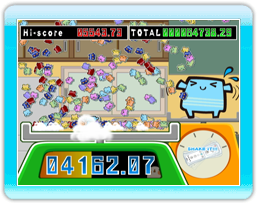
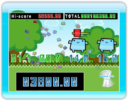

11 |
Mini-Games (1) |
 |
This mini-game is a high-octane rattle speed trial. Shake the Wii Remote as fast as you can to rack up an unbeatable score. The player with the highest score after an intense 3 second shakedown will be declared the winner!
Pay careful attention to the second count displayed beneath
|


 |
 |
 |